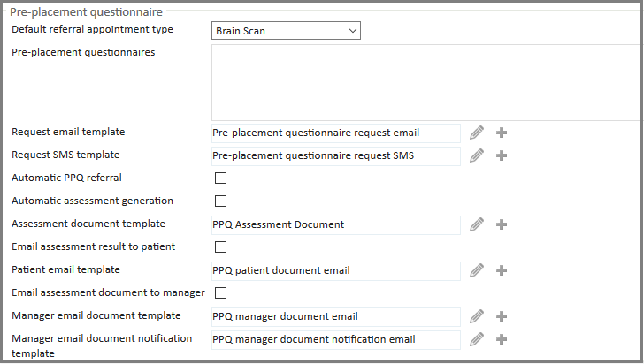
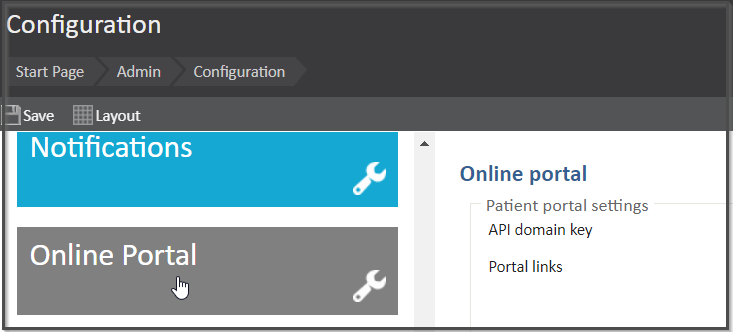
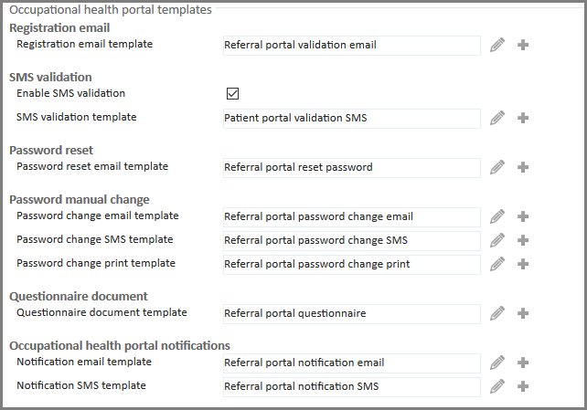
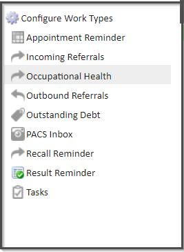
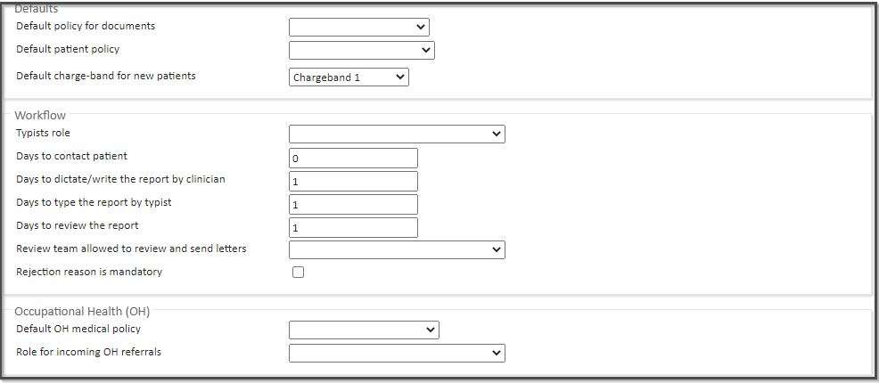
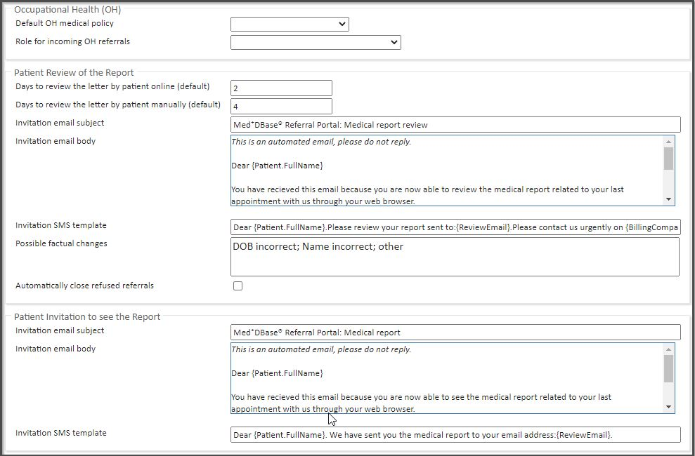
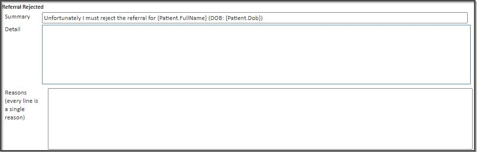

Managers: All notifications from the referral portal will be sent to the managers Mobile numbers - think of the Work Phone number as an additional field. The system will not read the Work Phone number if the Mobile Number field is empty, so it is vital to that they have a Mobile number registered.
Employees: Appointment confirmation emails go to the employee's Email field address, not Work Email field.
Template | Recipient | Triggered by |
Registration email template | Manager | Referral portal account activation |
SMS validation template | Employee | Questionnaire/document to review |
Password reset email template | Manager | Password reset requested |
Password change email/SMS/print template | Manager | Password changed on their behalf and sent manually |
Questionnaire document template | Internal | Questionnaire completed |
Notification email/SMS template | Manager | Notification received (SLA failure, new message, report released) |


Template | Recipient | Triggered by |
Request email/SMS template | Employee | Request to complete questionnaire sent |
Assessment document template | Manager/Employee | Questionnaire ‘passed’ |
Patient email template | Employee | Assessment result available and ‘Email assessment result to patient’ is ticked |
Manager email document template | Manager | Assessment result available and ‘Email assessment document to manager’ is ticked |
Manager email document notification template | Manager | New assessment results are available to view in the portal |

Section | Recipient | Triggered by |
Patient Review of the Report | Employee | Report sent to employee for review |
Patient Invitation to see the Report | Employee | Report released, if the patient does not wish to review their report prior to release |
Manager Review of the Report | Manager | Report released |
Templates > Report Template | Manager/Employee | Report written |
Templates > Rejection Letter Template | Manager | Referral rejected |
Report default texts | Manager | Pre-populates the ‘Summary’ and ‘Detail’ before the report/rejection letter is written |
Under Configure Work Types menu select Occupational Health




The following actions will trigger a notification in the Occupational Health Portal. Based on the manager's contact options, they will also receive an email/SMS.